第 4 章 随机游走#
本章解决：把"一步一随机"的过程研究透——从 1d 格点游走（均值方差、常返性）到扩散方程与布朗运动（扩散标度 \(D=\Delta x^2/2\Delta t\)、Wiener 三公理、Pólya 定理），再到四大应用：期权定价（几何布朗运动 + 风险中性）、赌徒破产（差分方程全解 + 倍押策略）、Kelly 准则（增长率最大化）、电阻网络（随机游走=解狄利克雷问题，基本矩阵），最后以 kinetic Monte Carlo 收尾。注意：马尔可夫链可以看作随机游走，但随机游走不一定是马尔可夫的——自回避行走依赖全程历史。 对照教材：Shonkwiler & Mendivil《Explorations in Monte Carlo Methods》第 4 章（pp.141–184，§4.1–4.8，公式编号 (4.1)–(4.34) 与笔记一致）。补充：Dunn & Shultis 的随机游走与 BM 材料分散在其 §7 附近；附录 C/D 的结论（Kelly 相关投资、Donsker 定理）以拓展框并入本章对应位置。
| 关键词 | 事实 |
|---|---|
| 1d 游走 | \(\mathbb E(S_n)=n(p-q)\Delta x\)，\(\operatorname{var}(S_n)=4npq\,\Delta x^2\)（式 (4.2)(4.3)） |
| 常返性 | 1d、2d 格点游走概率 1 回到原点（Fig 4.2 论证；Pólya 定理：\(d\ge3\) 非常返） |
| 扩散标度 | \(D=\Delta x^2/2\Delta t\) 固定 → 极限密度 \(e^{-x^2/4Dt}/\sqrt{4\pi Dt}\)，满足扩散方程 (4.7) |
| 布朗运动 | Wiener 三公理；尺度不变 \(\alpha^{-1}W_{\alpha^2t}\) 仍是 Wiener 过程 |
| 期权定价 | \(\mathrm dS/S=\mu\,\mathrm dt+\sigma\,\mathrm dW\)；风险中性 \(\mu=r\)；\(P=e^{-rT}\mathbb E[\max(S_T-X,0)]\)（4.10） |
| 赌徒破产 | \(r_x=\dfrac{(q/p)^a-(q/p)^x}{(q/p)^a-1}\)（4.12）；公平局 \(r_x=1-x/a\)；时长 \(T(x)=x(a-x)\)（4.16） |
| Kelly 准则 | \(f=E/\gamma\)（4.20）——优势除以赔率，最大化长期增长率 |
| 电压=概率 | 电阻网络节点电压 ≡ 游走先到 \(O\) 后到 \(Z\) 的概率；\(h_D=(I-\hat P)^{-1}Rh_B\)（4.30） |
本章代码：nb/ch04.ipynb（种子 2027）。13 个实验：30 步游走直方图、漂移游走、常返性、扩散标度坍缩、二维布朗运动、Pólya 维度对比、期权定价 vs Black–Scholes、赌徒破产双验证、倍押 vs 平押、Kelly 四档投注比、灾难损失 Kelly 扫描、电网电压三法互证、kMC 谷粒翻转。
实验索引
| # | 实验 | 书节 | 产出图 |
|---|---|---|---|
| 1 | 30 步公平游走 | §4.1 | out-4-1.png |
| 2 | 漂移游走 | §4.1 | out-4-2.png |
| 3 | 一维常返性 | §4.1 | out-4-3.png |
| 4 | 扩散标度坍缩 | §4.2 | out-4-4.png |
| 5 | 二维布朗运动 | §4.3 | out-4-5.png |
| 6 | Pólya 定理维度对比 | §4.3 | out-4-6.png |
| 7 | 期权定价 vs Black–Scholes | §4.4.1 | out-4-7.png |
| 8 | 赌徒破产双验证 | §4.5 | out-4-8.png |
| 9 | 倍押 vs 平押 | §4.5.1 | out-4-9.png |
| 10 | Kelly 简单游戏 | §4.6.1 | out-4-10.png |
| 11 | 灾难损失 Kelly | §4.6.2 | out-4-11.png |
| 12 | 电网电压三法互证 | §4.7 | out-4-12.png |
| 13 | kMC 谷粒翻转 | §4.8 | out-4-13.png |
4.0 本章导图#
4.1 一维随机游走（1d Random Walk）#
格点整数线上的粒子：起点原点，每 \(\Delta t\) 以概率 \(p\) 右移一步、\(q=1-p\) 左移，步长 \(\Delta x\)。\(n\) 个时间周期后粒子位于 \(-n(\Delta x)\) 到 \(n(\Delta x)\) 之间。位置 \(x=m\Delta x\)（\(-n\le m\le n\)）：到 \(\pm5\Delta x\) 只有 1 种走法、到 \(\pm3\Delta x\) 有 5 种、到 \(\pm\Delta x\) 有 10 种——组合数 \(\binom50=1,\binom51=5,\binom52=10\)（向右步数的选择方式数）。
书 Fig 4.1：200,000 条 30 步游走终点的直方图——由 CLT 近似正态（Alg 4.1）。形式化：\(X_i\) 取 \(\Delta x\)（概率 \(p\)）或 \(-\Delta x\)（概率 \(q\)），\(S_0=0\)，
由独立性（第 1 章式 (1.18)(1.33)）：
标准差 \(\sigma=2\sqrt{npq}\,\Delta x\)；\(p=q=\frac12\) 时 \(=\sqrt n\,\Delta x\)——游走按 \(\sqrt n\) 弥散（第 2 章 Gibrat 的乘法对应物：位移按根号长）。
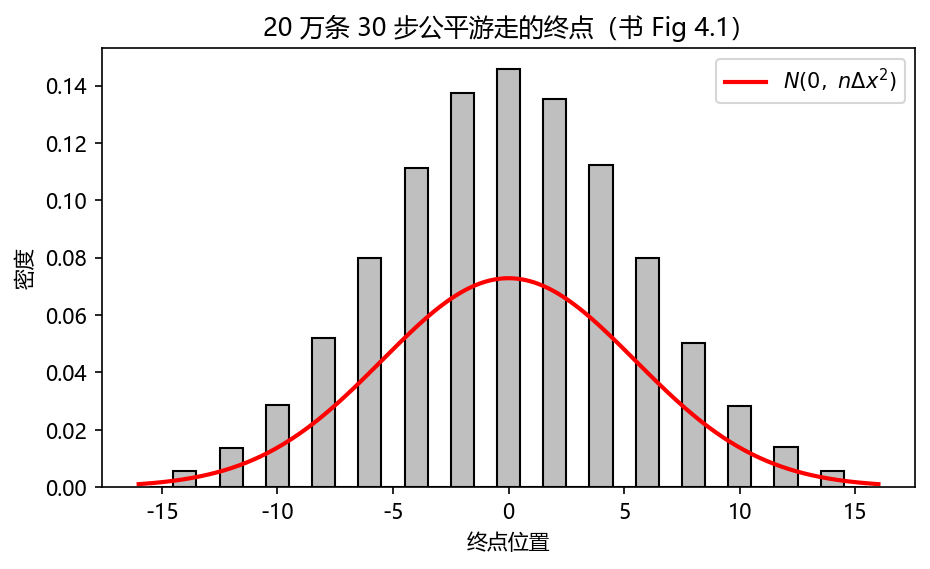
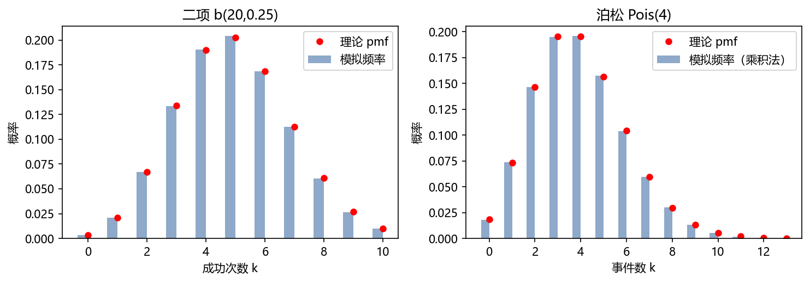
一维常返性（recurrence）：游走按 \(\sqrt n\) 弥散，似乎会一去不返？错——1d 游走以概率 1 回到原点，且无穷多次。书 Fig 4.2 的自相似论证：设 \(R\)=从原点出发终将回到原点的概率。首步对称，不妨设向右到 \(x=1\)；下一步 ½ 概率直接回原点，否则到 \(x=2\)——而从 \(x=2\) 回到原点必须先回 \(x=1\)，这条概率恰是 \(R\)（线的无穷性保证自相似）：
解 \(2R(1-R/2)=1\) 得 \(R=1\)。∎ 由"0 与任何格点互通（互达概率均为正）"，游走将以概率 1 到达任何预定值 \(M\)（\(100\)、\(10^6\)、\(-9{,}192{,}129\)……）且无穷多次。
到达 \(m\Delta x\) 的概率：设右行 \(r\) 步、左行 \(l\) 步：\(m=r-l\)、\(n=r+l\)，故 \(r=\frac{n+m}2\)、\(l=\frac{n-m}2\)（\(n,m\) 同奇偶才有定义）。这正是 \(n\) 次抛（加权）硬币数右次数——二项分布（§2.3）：
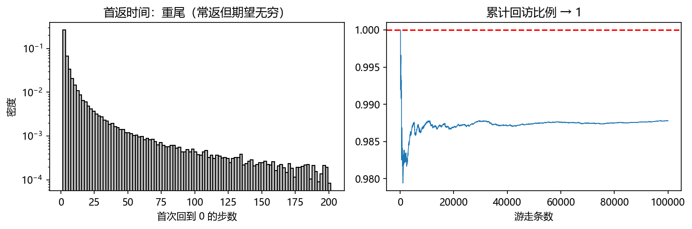
4.2 扩散（Diffusion）#
1828 年植物学家 Robert Brown 观察到水中花粉的无规运动——现在是水分子热运动碰撞的传递。扩散（diffusion）= 这种输运，可建模为随机游走。
作为游走极限的扩散：取 \(p=q=\frac12\)。位置是独立伯努利试验之和（式 (4.1)），CLT 适用。\(\Delta x,\Delta t\to0\) 时，\(t\) 时刻位于 \(x\) 的概率由正态密度近似（\(\mu=0\)、\(\sigma^2=n\Delta x^2=t\frac{\Delta x^2}{\Delta t}\)），把离散分布除以 \(2\Delta x\) 集中成密度：
跳向连续：直接让 \(\Delta x,\Delta t\to0\) 会让 \(p(m,n)\to0\)（概率摊薄）。必须固定扩散标度比（diffusive scaling ratio）
不变——得到高斯分布
\(D\) 叫扩散系数（diffusivity），单位面积/时间，依赖于溶质、溶剂、温度。为什么固定 \(\Delta x^2/\Delta t\) 而不是 \(\Delta x/\Delta t\)：扩散中位移正比于 \(\sqrt t\)（时间减半 → 距离只走 ¼）——否则 \(\Delta t\to0\) 会产生无穷速度，这就是扩散标度（diffusive scaling）。
该 \(u(x,t)\) 满足扩散方程（Einstein 发现）：
验证只需对 (4.6) 求对数微分：\(\ln u=-\tfrac12\ln(4\pi Dt)-\tfrac{x^2}{4Dt}\) 给出\(u_t=u\big(\tfrac{x^2}{4Dt^2}-\tfrac{1}{2t}\big)\) 与 \(u_{xx}=u\big(\tfrac{x^2}{4D^2t^2}-\tfrac{1}{2Dt}\big)\)，两式立得 \(D\,u_{xx}=u_t\)。扩散方程的解叫调和函数（harmonic functions）（§4.7 回归）。
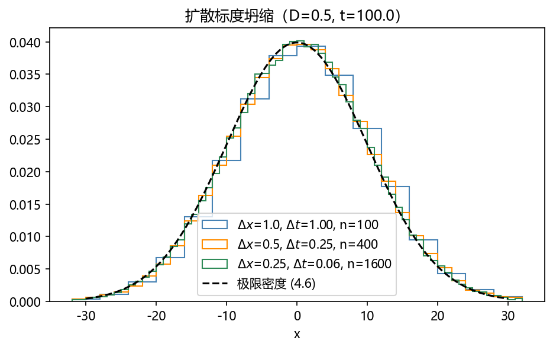
4.3 布朗运动（Brownian Motion）#
1d 格点游走只是布朗运动的粗糙近似；但让步长变小、步频变密，竟能导出扩散定律。布朗运动的数学理论由 Norbert Wiener 奠定，故称 Wiener 过程。三公理（\(W_t\)=粒子 \(t\) 时刻位置，\(t\) 连续）：
- \(W_0=0\)；
- 对 \(t_1<t_2<\dots<t_n\)，增量 \(W_{t_2}-W_{t_1},\dots,W_{t_n}-W_{t_n-1}\) 独立；
- 对 \(s<t\)，\(W_t-W_s\sim N(0,\ c(t-s))\)，\(c>0\) 固定。
于是步长正态、方差随时间线性涨。二维：交替沿 x/y 方向走，或每步随机方向 + 正态步长（对应固定时间间隔观测）——书 Fig 4.3 的模拟（Alg 4.2）：典型轨迹呈"团簇 + 触须"形态，右下图是 400 条游走终点的散点=二维正态密度。
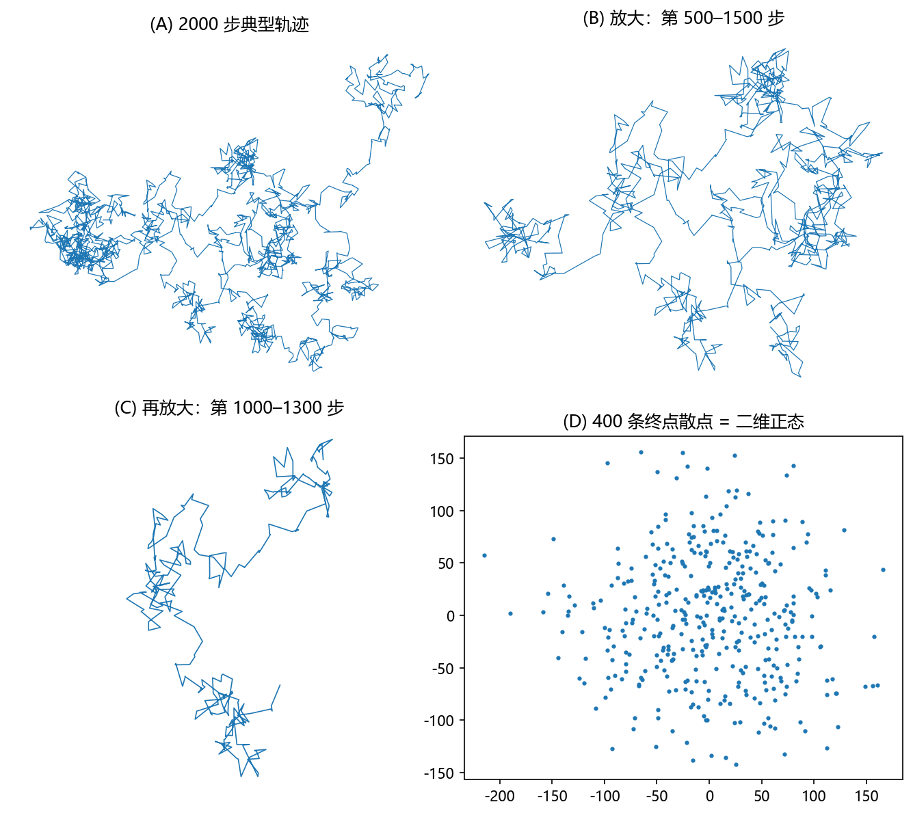
自尺度性（self-scaling）：轨迹在任意放大倍数下形态相同——具体地 \(\alpha^{-1}W_{\alpha^2t}\) 对任意 \(\alpha\ne0\) 仍是 Wiener 过程（步长除以 \(\alpha\)、方差乘 \(\alpha^2\)，分布不变）。分形性质的分身。
常返性：二维对称格点游走也常返（概率 1 回原点且无穷次），因而会命中任何指定格点。Pólya 定理：
定理 4.1（Pólya）
\(d\) 维格点上的简单随机游走：\(d=1,2\) 常返（recurrent）；\(d>2\) 非常返（transient）——有正概率游荡到无穷永不回头。
二维布朗运动同样常返但不逐点：以概率 1 回到原点的任意邻域（不必恰回原点）。这可由 Pólya 定理 + 游走的极限导出——即 Donsker 不变原理（完整陈述见下方深入框）。实验 6 用模拟直接对比 \(d=1,2,3\) 的回访比例。
深入（原书附录 D）：Donsker 定理
\(X_i=\pm1\) 各半等可能，\(S_k=\sum_{i\le k}X_i\)，把随机游走线性插值成连续函数：
**定理（Donsker [Don51]）**：\(n\to\infty\) 时 \(W(n,\cdot)\) **弱收敛**到 Wiener 过程 \(W(t)\)——对 \(C[0,1]\) 上的一切连续泛函 \(F\)（如 \(F(f)=\int_0^1f(t)\,dt\)），有 \(\mathbb E\,F(W(n,t))\to\mathbb E\,F(W(t))\)。这是"布朗运动 = 随机游走的扩散极限"的严格化（书 Fig D.1 画了 \(n=3/12/48/192\) 的插值演化）。
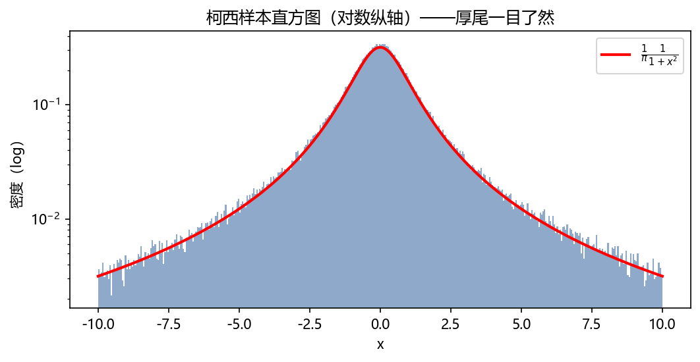
4.4 随机游走应用 I（Random Walk Applications I）#
1900 年 Louis Bachelier 的博士论文引入现代金融三大概念：期权作为风险缓解机制、有效市场假说、用布朗运动给期权定价——超前时代半个世纪，1954 年才被重新发现。
4.4.1 金融中的期权定价（Options Pricing in Finance）#
- 看跌期权（put option）：持有人有权在未来某日以行权价（strike price）\(X\) 卖出股票。例：GE 现价 $32，三个月后若跌破 $25 公司就完了——买 put 保住 $25 卖出权。像保险单：市价不跌则合同作废。期权卖方（maker）承担风险，收取权利金（premium）。
- 看涨期权（call option）：对偶——有权按 \(X\) 买入。例：Genentech $79，新药若获批将暴涨；投机者买 $85 的 call，若涨到 $92 则每股赚 $7。
公平价格是什么？ Black 与 Scholes（1973，Merton 独立同月）解决。基于 Bachelier 另两条观察的现代化：有效市场假说（efficient market hypothesis，Eugene Fama 1960s）——价格已反映全部已知信息，故短时价格运动完全随机，小步比大步更可能（步长正态 → 一维布朗运动）；步长与股价成比例——这一精化叫几何布朗运动（geometric Brownian motion）（"几何"指方差按比例缩放，不是几何学）。Itô 随机微积分给出 Black–Scholes 公式；我们直接模拟股价的几何随机游走。
股价基本方程（\(S\)=股价，\(\mathrm dt\)=小时间单位）：
\(\mathrm dW\) 是布朗运动随机变量。无随机性（\(\mathrm dW=0\)）时 \(\frac{dS}{dt}=\mu S\)——指数增长，\(\mu\) 是增长率；期权定价与 \(\mu\) 无关（见下）。\(\sigma\) 是波动率（volatility）——价格波动的剧烈程度，实为股价的标准差（可从历史估计）。
模拟：抽正态样本当 \(\mathrm dW\)，逐步推进 \(S^{new}=S^{old}+\mathrm dS\)。Itô 表明 \(\mathrm dW\) 的方差必须取 \(\mathrm dt\)：
量纲：各项无量纲；\(\mathrm dt\) 以年计时，\(\mu\) 每年、\(\sigma\) 每根号年（实务统一说"每年"）。
风险中性估值（risk-neutral valuation）：公平性 ⟹ 无人能赚"免费"的钱。设 \(r\)=最佳无风险利率（国债）。公平期权价要求 \(\mu=r\)——若 \(\mu>r\) 且有保证，人人买股票弃国债，\(\mu\) 就成了无风险率；\(\mu>r\) 是风险的报酬，把它代入 (4.9) 会给出不公平的期权价（用 \(r\) 贴现未来资金却按 \(\mu\) 漂移，不一致）。详见 [Hul03]。
定价流程（书例：call，90 天，\(S_0=\$20\)，\(X=\$25\)，\(\sigma=60\%/\)年，\(r=3.1\%/\)年）：每条路径模拟 90 天（Alg 4.3），得 \(S_{90}\) 直方图（Fig 4.4）——注意 \(S_{90}\) 非正态而是对数正态（§2.7！），几何游走的 \(S\) 永不为负、\(\log S\) 才正态。到期期望
再按无风险率贴现回今日：
书运行 6 次得 0.9388, 0.8581, 0.8943, 0.8699, 0.9085（均值 0.8898、标准差 0.0276），Black–Scholes 精确值 0.9056——0.6 个标准差之内；误差按 \(1/\sqrt{nTrials}\) 缩。
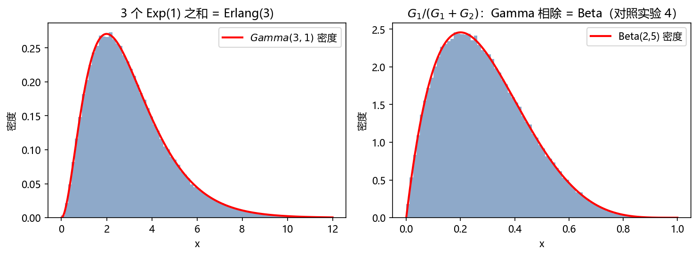
拓展：Black–Scholes 公式（书 Notes）
\(\ C=SF(d_1)-Xe^{-rT}F(d_2)\ \)，其中 \(F\) 为 \(N(0,1)\) 的 cdf（Table 2.2）：
实验 7 用它做基准。式 (4.8) 是**随机微分方程（stochastic differential equation）**，其解即此式——随机版微分方程同样"有解"。
4.4.2 自回避行走（Self-Avoiding Walks）#
自回避行走（self-avoiding walk, SAW）：格点上不走回头路的游走——任何格点至多访问一次。1d 平凡；2d/3d 的最基本问题至今未解：(1) \(n\) 步 SAW 有多少条？(2) \(n\) 步 SAW 的平均位移（终点与起点的直线距离）是多少？
二维方格直接可数：\(c_1=4,\ c_2=12,\ c_3=36,\ c_4=100\)；猜想 \(c_n\approx2.64^n\)；位移平方期望猜想 \(\mathbb E(\text{displacement}^2)\approx n^{3/2}\)。
为什么重要：工业聚合物由单体（monomers）化学连成（上千个）——SAW 的格点扮演单体、边扮演链接，"不得重复占据"正是自回避条件；\(c_n\) 与位移隐含聚合物的物理性质。编码要点：保留全程历史逐步查询（所以 SAW 不是马尔可夫链——下一步依赖全部历史）；高效做法是从不立即相交的方向里随机选；可能自困（self-trap）（四周全被占）——此时记录统计、清空历史、重新开走。习题 15 模拟估计 \(c_n\) 与位移。
4.5 赌徒破产（Gambler's Ruin）#
概率论源于赌博（Fermat–Pascal 通信）。赌徒每局 $1、胜率 \(p\)、败率 \(q=1-p\)；本金 \(x\)，庄家 \(h\)，总赌资 \(a=x+h\) 恒定。\(X(t)\)=赌徒财富，游走于 \(0<X(t)<a\)，触及 0（破产）或 \(a\)（赢光庄家）即停。会不会永远玩下去？不会——下面精确解之。
公平局是鞅（martingale）：\(p=\frac12\) 时每局期望不变——\(\mathbb E(X(1))=\frac12(x+1)+\frac12(x-1)=x\)，\(\mathbb E(X(2))=x\)，……期望保持的过程叫鞅。加上"游走按 \(\sqrt t\) 弥散"，可估计游戏时长量级。
设 \(r_x\)=本金 \(x\) 时破产的概率、\(h_x\)=赢光庄家的概率。若能证 \(r_x+h_x=1\)，则游戏必在有限时间结束。对一局分解：输则同本金 \(x-1\) 的处境、赢则同 \(x+1\)：
边界：\(x=1\) 输即破产（\(r_1=q+pr_2\)）、\(x=a-1\) 赢则完胜（\(r_{a-1}=qr_{a-2}\)）——统一为 \(r_0=1,\ r_a=0\)。(4.11) 是差分方程，理论与线性常系数微分方程平行。试解 \(r_x=b^x\)：
\(p\ne\frac12\) 两根 \(b=1\) 与 \(b=q/p\)，通解 \(r_x=A+B(q/p)^x\)，代入 \(r_0=1,r_a=0\)：
\(p=q=\frac12\) 重根 \(b=1\)，两独立解 \(1,x\)，通解 \(A+Bx\)：
同法（边界 \(h_0=0,h_a=1\)）：
因此 \(r_x+h_x=1\) 对一切 \(x\) 成立——破产或胜出，二者必居其一。
鞅解法（更漂亮）：公平局中最终期望财富 \(=r_x\cdot0+(1-r_x)\cdot a\) 应等于初始 \(x\)，立得 \(r_x=1-x/a\)——与 (4.13) 一致。
破产方程的推论（感受指数的暴力）：赌徒 $10,000 对赌场 $1,000,000，公平局赢光庄家概率 \(=10{,}000/1{,}010{,}000\approx0.99\%\)。但赌局从不公平：轮盘红 \(p=18/38=0.474\)，则
哪怕 \(p=0.4999\)（万分之一的偏差），赢光庄家概率也仅 \(\approx1.89\times10^{-174}\)。对公平最微小的偏离都有极端后果。
期望游戏时长：设 \(T(x)\)=从 \(x\) 出发到吸收的期望时间（公平局）。分解一局：
即非齐次差分方程 \(T(x)-\frac12T(x+1)-\frac12T(x-1)=1\)（\(T(0)=T(a)=0\)）。齐次解 \(A+Bx\)（重根 1）；特解试 \(Cx^2\)：\(Cx^2-\frac C2(x+1)^2-\frac C2(x-1)^2=1\Rightarrow C=-1\)。完整解 \(T(x)=A+Bx-x^2\)，边界定出
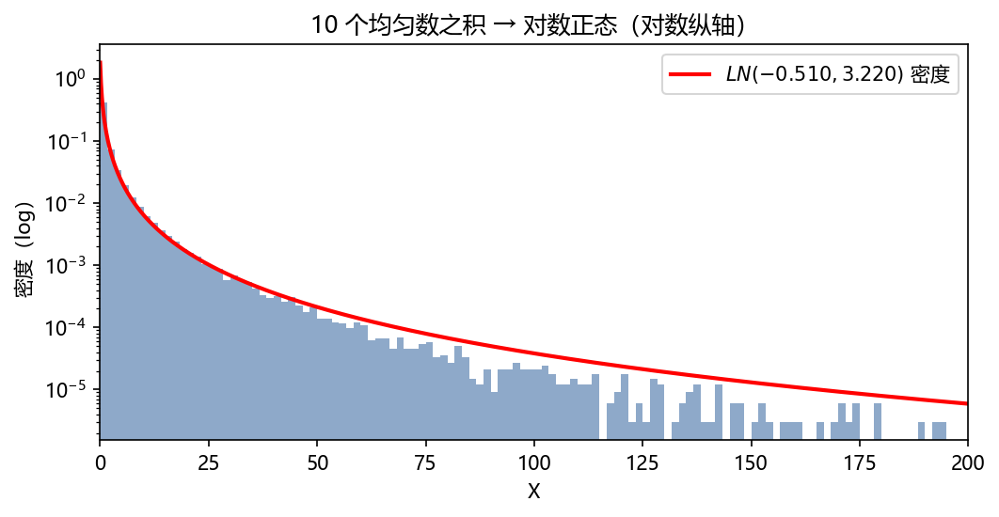
4.5.1 赌博方案（Gambling Schemes）#
赌徒带 $\(x\) 进场、目标赢 $\(Q\)。例：$1023 本金、目标赢 $1、每局 $1、\(p=0.474\)。此时 \(a=Q+x=\$1024\)，由 (4.14) 成功概率
10% 概率输光 $1023。期望 \(=\$1\times0.90-\$1023\times0.10=-\$101.40\)。唯一的安慰是时间长：\(T(x)=1023\times1=1023\) 局（式 (4.16)）。
倍押（doubling-up）策略：预设目标赢 1 单元。首局 $1；输则下局押上局 2 倍（$2、$4、$8……）；赢即总收益 $1 立即离场。第 \(n\) 局押 $\(2^{n-1}\)，累计押注 \(1+2+\cdots+2^{n-1}=2^n-1\)。$1023 \(=2^{10}-1\) 只够连输 9 局；第 10 局连输概率 \(0.526^{10}=0.00162\)。此策略的期望损失
成功概率 99.84%——对比平押的 90%。bold play（大胆玩法）远胜胆小玩法。但要清醒：财富有界时不存在必胜方案——公平局中无论怎么下注，财富的期望恒等于初始值。
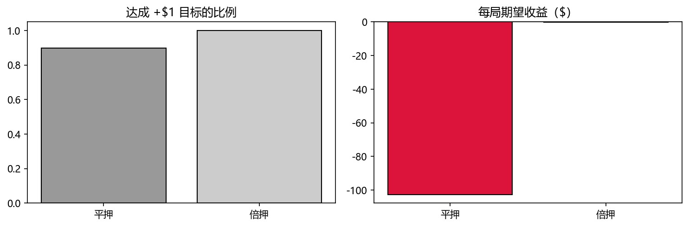
4.6 随机游走应用 II——金融中的 Kelly 准则（Kelly's Criterion）#
1950 年代初 Bell Labs 的 John Kelly 研究的问题：对"虽随机但利于你"的结果该押多大比例？（动机是噪声信道上的赛马情报，[Kel56]；后来成为资产配置策略的基础。）
4.6.1 简单 Kelly 游戏（The Simple Kelly Game）#
抛硬币胜率 \(p\)、每单元押注赢得 \(\gamma\)。期望收益
（\(q=1-p\)；只玩 \(E>0\) 的游戏）。Kelly 的关键假设：游戏无限重复。于是目标不是单局期望，而是最大化期望增长率 \(g\)：设 \(X_N\)=第 \(N\) 局后财富，\(X_0\)=初始本金，\(e^{gN}X_0=X_N\)，即
每局押财富的 \(f\) 比例：赢则 \(X_1=(1+\gamma f)X_0\)、输则 \(X_1=(1-f)X_0\)。\(N\) 局后 \(X_N=(1+\gamma f)^W(1-f)^LX_0\)（\(W,L\)=胜负局数——乘法可交换，次序无关）。增长率
（\(W/N\to p\)、\(L/N\to q\)，大数定律！）对 \(f\) 求导取零：
解出
形式极其简洁：期望除以赔率（优势 over 赔率，edge over odds）——Kelly 准则。例：\(p=0.6\)、\(\gamma=1\)（even-money）→ \(f=0.2\)。书 Fig 4.5 展示 \(N=300\) 局、\(f=0.05/0.1/0.2/0.25\) 的财富路径（各图 y 轴尺度不同）：\(f\) 增大终点财富涨、波动也涨；Fig 4.6 给 \(N=20000\) 时 \(f=0.2\) vs \(0.25\) 的对数财富对比。
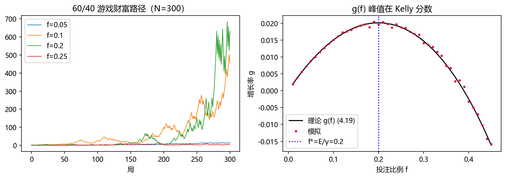
4.6.2 带灾难损失的简单游戏（The Simple Game with Catastrophic Loss）#
双币游戏：\(O_1\)=两币不同（\(p_1=\frac12\)）、\(O_2\)=两正（\(p_2=\frac14\)）、\(O_3\)=两反（\(p_3=\frac14\)）。设下注 $1 于 \(O_1\)：中了赢 $4（\(\gamma_1=4\)）、\(O_2\) 输掉赌注（\(\lambda_2=1\)）、\(O_3\) 输掉赌注再倒贴 $3（\(\lambda_3=4\)）。期望
\(\lambda_3\) 的存在使押注不得超过本金 \(1/4\)（否则 \(O_3\) 一局爆仓）；恰押 ¼ 也终将全损、非最优。财富演化 \(X_N=(1+f\gamma)^W(1-f)^L(1-\lambda f)^MX_0\)，增长率
求导、通分，分子整理为（书式 (4.22)）：
忽略 \(f^2\) 项（\(f<\frac14\) 时小）得近似 \(f=\frac{3/4}{13}=0.0577\)；含二次项的精确解 \(f=0.0625\)。复杂资产配置问题的优化分数导向难解的非线性方程组——但它们是随机问题的答案，蒙特卡罗模拟总能找到（下一小节见真章）。
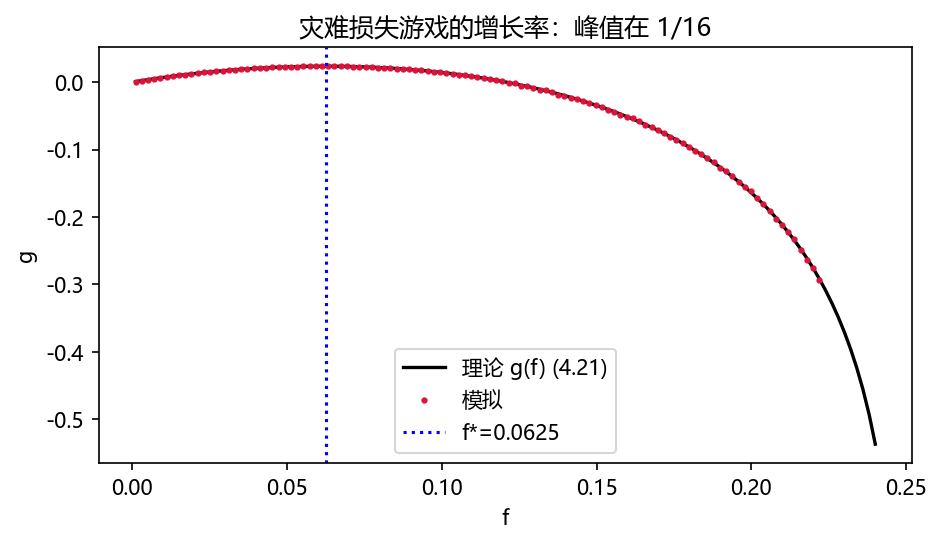
4.6.3 期权交易应用 I（Option Trading Application I）#
期权合约要么赚钱要么作废（权利金全失）、到期日结算——Kelly 的完美场景。书用一位信誉良好的期权交易员的（未经验证的）实盘记录：credit spread（卖低价期权+买更高行权价的同股同月期权，收净权利金；买高价期权是"保险"，限制损失，脚注给出 IBM $114 的算例）。
75 笔交易：66 笔盈利、9 笔亏损；平均盈利 $659.12；最大亏损 $2837.00；剔除最大亏损的平均亏损 $1669.32。取"每注"= 平均亏损 $1669.32（\(\lambda_2=1\)）；\(\gamma_1=659.12/1669.32=0.3948\)；最大损失率 \(\lambda_3=2837/1669.32=1.70\)；概率 \(p_1=66/75=0.880,\ p_2=8/75=0.107,\ p_3=1/75=0.013\)。期望
解二次方程 (4.22)：\(f=0.455\)（约 46%；线性近似 0.28 在此失真严重）。
4.6.4 期权交易应用 II（Option Trading Application II）#
两项投资分配。A = 上面的 credit spread；B = calendar spread（卖近月、买远月同价期权，脚注 IBM 算例：净支出 $1.65，一个月后若股价不动净赚 $2.02）。B 的战绩：12 笔、10 胜、平均盈利 $555.20、最大亏损 $124.00、平均亏损（剔除最大）$90。于是 \(\gamma=555.20/90=6.17\)、\(\lambda_{avg}=1\)、\(\lambda_{max}=124/90=1.38\)：
单投 B：二次方程最小根 \(f=0.625\)。双投（份额 \(f_A,f_B\)，假设两玩法独立——大概不成立，附录 C 展示相关性处理）：九种结果（Table 4.1）各带概率 \(p_Ap_B,\dots,r_Ar_B\) 与财富乘子 \(1+f_A\gamma_A+f_B\gamma_B\) 等；约束 \(\lambda_Af_A+\lambda_Bf_B<1\)（双双吃最大损失不得爆仓）。对 \(f_A,f_B\) 求偏导得两组九项分式方程（书给出全式）——难解的非线性方程组！用遗传算法（第 5 章）优化期望、以解为初值精化，得
最大损失敞口 \(\lambda_Af_A+\lambda_Bf_B=1.7\times0.073+1.38\times0.619=0.978\)（近乎全部本金，但发生概率 \(0.0133\times0.083=0.0011\)）。
拓展（附录 C 摘要）：相关性怎么进 Kelly
附录 C 用 payout（\(\alpha=\gamma+1\)，含本金的倍数）重述：有利条件 \(p\alpha>1\)。两投资的成功指示变量 \(X,Y\)（Bernoulli）的相关系数 \(\rho\) 决定联合概率 \(d(1,1)=p_Ap_B+\rho\sigma_A\sigma_B\)（式 (C.7)），进而得四项增长率
在 \(b+f_A+f_B=1\) 约束下最大化（书给出 GA 代码）。相关性通过联合概率改变各结果的权重，方向错了会高估可押比例。
拓展（书 Notes）：Kelly 的争议
Kelly 最大化长期增长率，但作为随机游走，财富以概率 1 会缩到初始值的零头——若退休恰逢低谷就惨了（Samuelson 强烈反对）。多数顾问改用 Markowitz 的资本资产定价模型（CAPM）：按风险承受度配置分散组合。Kelly 思想史的有趣读物："Fortunes Formula" [Pou05]。
4.7 随机游走与电网（Random Walks and Electrical Networks）#
出乎意料：图上的随机游走与同一张图上的电网深度同构。标准参考 [DS84]（本节主要依据）。
回忆赌徒破产：公平局赢光庄家概率 \(h_x\) 满足
现在看电路：\(a\) 个电阻 \(R\) 串联接 1 伏电池（书 Fig 4.7），节点 \(x\) 的电压 \(v(x)\)：\(v(0)=0,\ v(a)=1\)。Kirchhoff 定律（节点无电流堆积 → 流入和为零）+ Ohm 定律（\(v=iR\)）：
\(h\) 与 \(v\) 满足同一组线性方程，而非奇异线性方程组解唯一：\(v(x)=h_x\)——电压就是赢光庄家的概率！
二维电阻网络：平面区域内的整数节点，内部点经 4 个电阻连四邻（\(R=1\)）。边界节点分两组：\(O\) 组电压 1、\(Z\) 组电压 0。内部 \((x,y)\) 的 Kirchhoff+Ohm：
在连通区域格点上"每个内部点取四邻均值"的函数叫调和函数——(4.23) 说明 \(v\) 调和。调和函数的重要性质：最大值与最小值必在边界取得（内部都是平均值，超不过边界极值）。
对应的随机游走：\(h_{xy}\)=从 \((x,y)\) 出发先到 \(O\) 后到 \(Z\) 的概率。内部点四向等概率：
且 \(h=1\) 于 \(O\)、\(h=0\) 于 \(Z\)——又同一组方程！电网的电压可以通过在电网上游走来求得。游走会否永不结束？\(r_{xy}+h_{xy}\)（先 Z 后 O 的概率 + 先 O 后 Z）也是调和函数，边界上恒为 1，由极值原理 \(r+h\equiv1\)——游走以概率 1 到达边界。书按此模拟 100,000 条游走解书 Fig 4.8 的网络（Fig 4.9：0.803, 0.776, 0.605, 0.427, 0.299）。
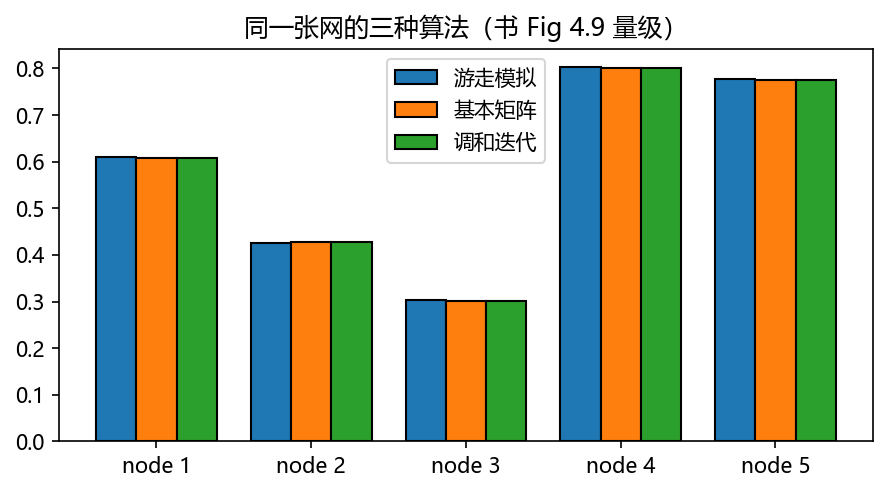
Dirichlet 问题：在带边界的有界连通区域上求"内部调和 + 边界取给定值"的函数。连续域的数值解法之一是有限元（离散化成格点再解）；蒙特卡罗法可用于离散化后的问题，但如上所见大区域上游走到边界太慢——只在"只需要少数几个点的解"时有优势。顺带：这 Monte Carlo 算法天然可并行。
4.7.1 电压的马尔可夫链解法（Markov Chain Solution for Voltages）#
把 Fig 4.8 的网络建成马尔可夫链：状态 \(\Omega=\{O,Z,1,\dots,5\}\)，\(O,Z\) 为吸收态（absorbing states）（转出概率 0），转移矩阵 (4.25)（7×7，内部行各 ¼ 或 ½ 分配给邻居）。方程组（含 \(h_O=h_O,\ h_Z=h_Z\) 恒等式）写成矩阵形式
\(\mathbf h=[h_O\ h_Z\ h_1\dots h_5]^T\) 是 \(P\) 的不动点（特征值 1 的右特征向量）——与不变分布方程 (3.1.2) 形式呼应，故 \(P^k\mathbf h=\mathbf h\) 对一切 \(k\)。
按吸收/非吸收分块：\(\mathbf h=[\mathbf h_B\ \mathbf h_D]^T\)（边界/内部），
\(I_2\) 单位阵、\(R\) 是 5×2 的"非吸收→吸收"转移阵、\(\hat P\) 是 5×5 内部转移阵。幂的规律：\(P^2=[\begin{smallmatrix}I_2&0\\ R+\hat PR&\hat P^2\end{smallmatrix}]\)、\(P^3=[\begin{smallmatrix}I_2&0\\ R+\hat PR+\hat P^2R&\hat P^3\end{smallmatrix}]\)……几何级数（矩阵版！与数字几何级数同理求和）：
且 \(\hat P\) 非负、行和 <1，\(\hat P^k\to0\)（书 Fig 4.10 证明：行和 ≤r<1 的非负阵之积行和 ≤r^k→0）。于是
\(N=(I-\hat P)^{-1}\) 叫基本矩阵（fundamental matrix）。本例 \(B=NR=\left[\begin{smallmatrix}0.6067&0.3933\\0.4270&0.5730\\0.3006&0.6994\\0.8006&0.1994\\0.7753&0.2247\end{smallmatrix}\right]\)，由 \(h_O=1,h_Z=0\) 得 \(\mathbf h_D=[0.6067,0.4270,0.3006,0.8006,0.7753]^T\)——既是电压也是游走命中概率，与 10 万条游走的模拟（Fig 4.9）对照吻合。
4.7.2 基本矩阵与期望命中时间（The Fundamental Matrix and Expected Hitting Times）#
非吸收状态 \(1,\dots,n\)；\(E_k\)=从状态 \(k\) 出发被吸收的期望迭代数。对一局分解：
（\(p_{kA}=\sum_{a\in A}p_{ka}\)：一步直达吸收的概率，加上"先耗 1 步到 j 再从 j 算"的各项。）写成矩阵形式并用行和=1 化简：
\(\mathbb 1\) 是全 1 列向量。只依赖瞬态（transient）状态间的转移——合理：瞬态间转移越容易，被吸收越慢。(4.32) 也能算到任意状态集合 \(G\) 的期望命中时间：把 \(G\) 改成吸收态即可。
遗传算法应用（第 5 章预告）：把优化问题的目标态设为吸收态，\(P\) 分块后 \(\hat P\) 是非目标态间转移阵。不变向量分块 \(\pi=((\alpha\ \beta))\)，\(\beta\hat P=\beta\)。由 Perron–Frobenius 定理（证明见 ch03 §3.1.2 深入框），\(\hat P\) 主特征值 \(\lambda<1\)、对应正左特征向量 \(\omega\)（归一）满足
含义：1 单位概率质量每次迭代只剩 \(\lambda\) 份——\(1-\lambda\) 是链每迭代"逃出非目标态"（即找到目标）的速率（启动暂态消散后）。习题 18 要求对具体例子计算 \(\mathbf E\) 与 \(\lambda\)。
一般电阻网络与可逆马尔可夫链：连通图 \(G\) 的边装电阻：\(R_{xy}=R_{yx}\)，电导（conductance）\(C_{xy}=1/R_{xy}\)；节点电导和 \(C_x=\sum_yC_{xy}\)。由此定义马尔可夫链：状态=节点、\(x\) 的非零转移恰是其邻居、
该链不可约（可能非周期），有唯一不变分布 \(\pi_x=C_x/C\)（\(C=\sum_xC_x\)）。其刻画性性质：\(\pi_xp_{xy}=\pi_yp_{yx}\)——细致平衡（§3.2.2 的老朋友）：
满足细致平衡的链叫可逆的（reversible）：平稳时正向路径 \(x_1\to x_2\to\dots\to x_n\) 与反向路径概率相同（书用三步链逐项验证）。逆定理也真：细致平衡的链对应一个电阻网络（取 \(C_{xy}=\pi_xp_{xy}\) 即可；\(p_{xx}\ne0\) 则节点 \(x\) 带自环电导 \(\pi_xp_{xx}\)——允许但无电流）。
把电池接上：选节点 \(a,b\) 接 1 伏（\(v_a=1,v_b=0\)）等价于把 \(a,b\) 设为吸收态；\(h_x\)=从 \(x\) 出发先 \(a\) 后 \(b\) 的概率。Kirchhoff+Ohm 在节点 \(x\)：
即 \(v_x\) 是邻居电压的平均——调和；\(h_x\) 同样调和（\(x\ne a,b\)），且 \(v_a=h_a=1,\ v_b=h_b=0\)，故 \(v\equiv h\)。电与概率在基本定律层面就是同一个东西。
4.8 Kinetic Monte Carlo 方法（The Kinetic Monte Carlo Method）#
MC 方法的一般框架可以适配一切"由内在跃迁驱动的基本过程"——股市、扩散热力学、赌博……kMC 是其中专攻"系统按随机游走逐时间步在相邻构型间跳跃"的稳健算法，时间步本身由指数分布给出。kMC 刻意利用基本过程的动力学与程序性信息来研究随机序列、建模复杂系统的时间演化；原子级金属过程（空位扩散、晶粒生长、薄膜沉积）是重镇。
与一般 MC 的区别：基本跃迁的率在运行中被动态更新——更可能的跃迁发展出来时，这一信息立刻进入选择过程；通常因此免去 Metropolis 拒绝机制、更快收敛到最终构型。kMC 关心的是最终构型而非概率分布。
按 Battaile [Bat08]，kMC 的迭代循环：
- 记录所有可能事件及其发生率 \(r_i,\ i=0,\dots,N\)；
- 按率轮盘赌选事件（快事件更常被选）；
- 执行选中事件、更新事件表与率；
- 用指数分布更新时间：\(-\ln(1-u)/R\)，其中 \(R=\sum_ir_i\)，\(u\sim U[0,1)\)。
书例（Alg 4.6）：8 位点线性格，每格"谷粒" A 或 B；事件=翻转该格；A 格率 1、B 格率 5。跑 64 个事件：单次运行得 结束时间 4.78、B 格平均占比 0.18、A:B 格比 = 4.69。
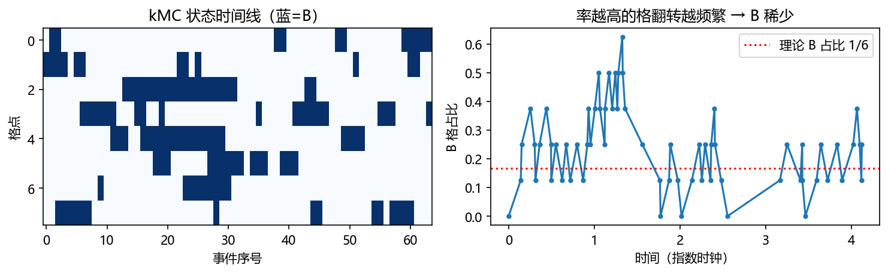
补充（Dunn & Shultis）：对应的随机过程材料
Dunn 书的随机游走/BM/扩散内容集中在其中后部（随机过程与输运一章），口径与本章一致：扩散标度 \(D=\Delta x^2/2\Delta t\)、BM 增量正态。其独特贡献是把"模拟输运问题"（粒子穿越介质）作为 MC 的招牌应用详细展开——与书习题 6/7 的 Black–Scholes 练习互补。
坑与陷阱#
1. 扩散标度必须固定 Δx²/Δt，不是 Δx/Δt
极限里位移 ∝ √t；固定 \(\Delta x/\Delta t\) 会让 \(\Delta t\to0\) 时速度爆炸。实验 4 的坍缩失败几乎总是标度取错。
2. 期权定价里 μ 必须换成 r（风险中性）
用真实的增长率 \(\mu\) 漂移、再用 \(r\) 贴现 = 自相矛盾的不公平定价。模拟里 \(\mu\) 只在"显示股价情景"时出现，定价一律 \(\mu=r\)。
3. S_T 是对数正态，别用正态套
几何游走的 \(S\) 恒正、右偏；均值被尾部主导（§2.7 坑 7 的翻版）。给 \(S_T\) 挂正态置信区间必错。
4. 倍押策略的'稳赢'幻觉
99.84% 成功率掩盖的是：平均每次成功只赚 $1，而 0.16% 的失败输光 $1023——期望仍是 −$0.66。赌场限额与有限资金使任何方案都改变不了负期望（式 (4.14) 的指数暴力）。
5. Kelly 的 f* 最大化的是增长率不是单局期望
按"最大化 \(\mathbb E(X_N)\)"选 f 会推向全押（杠杆拉满），长期几乎必然破产（增长率为负）。目标函数错一切皆错；且灾难损失（\(\lambda f\ge1\)）是硬约束。
6. 调和函数的极值在边界——别拿内部点外推边界值
解 Dirichlet 问题若内部出现超过所有边界值的"解"，方程或实现必有错（极大值原理是最便宜的 unit test）。
7. 基本矩阵只对瞬态子阵可逆
\((I-\hat P)^{-1}\) 存在当且仅当从每个瞬态态都必然被吸收（\(\hat P\) 行和 <1 于至少一行且链规范）。把吸收态误留进 \(\hat P\) 会让 \(I-\hat P\) 奇异。
8. kMC 的时间增量是 ∑ 指数，不是固定 Δt
时间更新 \(-\ln(1-u)/R\) 里的 \(R\) 是当前总率；率更新后忘记重算 \(R\) 是 kMC 实现的头号 bug（书 Alg 4.6 里 R = R-5+1 那两行就是干这个的）。
速览#
- \(S_n=\sum X_i\)：\(\mathbb E=n(p-q)\Delta x\)、var \(=4npq\Delta x^2\)（4.2/4.3）；公平游走按 \(\sqrt n\) 弥散。
- 1d 常返：\(R=\frac12\frac1{1-R/2}\Rightarrow R=1\)；任何格点无穷次到达；\(p(m,n)=\binom nr p^rq^{n-r}\)（4.5）。
- 扩散：固定 \(D=\Delta x^2/2\Delta t\)，极限 \(u=e^{-x^2/4Dt}/\sqrt{4\pi Dt}\)，满足 \(u_t=Du_{xx}\)（4.7）。
- Wiener 三公理（初值/独立增量/正态增量）；\(\alpha^{-1}W_{\alpha^2t}\) 仍是 Wiener 过程。
- Pólya：d=1,2 常返、d≥3 非常返；BM 的 2d 常返是邻域意义；Donsker 原理连通两者（§4.3 深入框）。
- 期权：几何布朗运动 (4.8)(4.9)；风险中性 \(\mu=r\)；\(P=e^{-rT}\mathbb E[\max(S_T-X,0)]\)（4.10）；\(S_T\) 对数正态；Black–Scholes 闭式核对。
- SAW：\(c_n\approx2.64^n\)、位移² \(\approx n^{3/2}\)（猜想）；依赖全程历史——非马尔可夫。
- 赌徒破产：\(r_x\) (4.12)/(4.13)、\(h_x\) (4.14)/(4.15)、\(r_x+h_x=1\)；时长 \(T(x)=x(a-x)\)（4.16）；\(p=0.474\) 时翻盘概率 \(10^{-45208}\) 级。
- 倍押：99.84% 达成目标、期望 −$0.66 vs 平押 90%、−$101.40；bold play 占优但无必胜方案。
- Kelly：\(g(f)=p\log(1+\gamma f)+q\log(1-f)\)（4.19）→ \(f=E/\gamma\)（4.20）；灾难损失给二次方程 (4.22)（例：0.0577 近似 / 0.0625 精确）；双投资导向非线性组 → GA。
- 电压=概率：Kirchhoff+Ohm 给出与游走命中概率相同的调和方程 (4.23)(4.24)；\(h_D=(I-\hat P)^{-1}Rh_B\)（4.30）；\(E=N\mathbb 1\)（4.32）；\(\omega\hat P=\lambda\omega\)，\(1-\lambda\)=逃逸速率（4.33）。
- 可逆链 ⟺ 电阻网络：\(p_{xy}=C_{xy}/C_x\)（4.34）、\(\pi_x=C_x/C\)、细致平衡自动成立。
- kMC 四步循环：记率 → 率轮盘赌 → 执行 → 指数时钟 \(-\ln(1-u)/R\)。
术语速查#
| 英文 | 中文 | 一句话 |
|---|---|---|
| random walk | 随机游走 | 步步随机的位移过程 |
| recurrent / transient | 常返 / 非常返 | 概率 1 回访 / 有概率永别 |
| diffusive scaling | 扩散标度 | \(D=\Delta x^2/2\Delta t\) 固定 |
| diffusion coefficient | 扩散系数 | \(D\)，面积/时间 |
| diffusion equation | 扩散方程 | \(u_t=Du_{xx}\)（4.7） |
| harmonic function | 调和函数 | 内部取邻域平均；极值在边界 |
| Brownian motion / Wiener process | 布朗运动 / Wiener 过程 | 三公理定义的连续随机过程 |
| scale invariance | 尺度不变 | \(\alpha^{-1}W_{\alpha^2t}\) 仍是 Wiener |
| self-avoiding walk (SAW) | 自回避行走 | 不重复访问格点；非马尔可夫 |
| put / call option | 看跌 / 看涨期权 | 卖权 / 买权 |
| strike price / premium | 行权价 / 权利金 | 约定成交价 / 期权费 |
| geometric Brownian motion | 几何布朗运动 | \(\mathrm dS/S=\mu\mathrm dt+\sigma\mathrm dW\) |
| volatility | 波动率 | \(\sigma\)，股价标准差 |
| risk-neutral valuation | 风险中性估值 | 定价时 \(\mu=r\) |
| martingale | 鞅 | 公平局：期望保持 |
| difference equation | 差分方程 | (4.11) 型递推 |
| absorbing barrier / state | 吸收壁 / 吸收态 | 触及即停 / 转出概率 0 |
| doubling-up | 倍押策略 | 输后翻倍下注 |
| Kelly's criterion | Kelly 准则 | \(f=E/\gamma\)，最大化 \(g\) |
| growth rate | （财富）增长率 | \(g=\frac1N\log(X_N/X_0)\)（4.18） |
| credit / calendar spread | 价差组合 | 期权组合玩法（4.6.¾.6.4） |
| conductance | 电导 | \(C_{xy}=1/R_{xy}\) |
| fundamental matrix | 基本矩阵 | \(N=(I-\hat P)^{-1}\) |
| expected hitting time | 期望命中时间 | \(E=N\mathbb 1\)（4.32） |
| reversible chain | 可逆链 | 细致平衡成立 |
| kinetic Monte Carlo (kMC) | 动力学蒙特卡罗 | 率驱动事件 + 指数时钟 |
覆盖自查#
原书小节 → 笔记位置
| 原书位置 | 内容 | 笔记位置 |
|---|---|---|
| §4.1 | 1d 游走、(4.1)–(4.3)、Fig 4.1（Alg 4.1）、常返性（Fig 4.2）、\(p(m,n)\) (4.5) | §4.1 |
| §4.2 | 扩散、极限 (4.6)、扩散标度与 \(D\)、扩散方程 (4.7) | §4.2 |
| §4.3 | Wiener 三公理、2d BM（Fig 4.3, Alg 4.2）、自尺度性、常返与 Pólya 定理 4.1、Donsker | §4.3 |
| §4.4 / 4.4.1 | Bachelier、期权概念、几何布朗运动 (4.8)(4.9)、风险中性、定价流程（Alg 4.3, Fig 4.4）与精度 | §4.4.1 |
| §4.4.2 | SAW：\(c_n\)、位移、聚合物、编码（习题 15） | §4.4.2 |
| §4.5 | 破产：鞅、(4.11)–(4.15)、鞅解法、推论（$10,000 例）、时长 (4.16) | §4.5 |
| §4.5.1 | 赌博方案：$1023 例、倍押、bold play | §4.5.1 |
| §4.6 / 4.6.1 | Kelly：动机、(4.17)–(4.20)（Fig 4.5/4.6, Alg 4.4） | §4.6.1 |
| §4.6.2 | 灾难损失：(4.21)(4.22)、0.0577/0.0625 | §4.6.2 |
| §4.6.3 / 4.6.4 | 期权 I（credit spread，f=0.455）/ II（calendar spread、双投资 GA、f_A=0.073, f_B=0.619、Table 4.1） | §4.6.¾.6.4 |
| §4.7 | 1d 电路 \(v=h\)、2d 网络 (4.23)(4.24)、极值原理、模拟（Fig 4.8/4.9）、Dirichlet 问题 | §4.7 |
| §4.7.1 | 吸收链 (4.25)、\(P\mathbf h=\mathbf h\) (4.27)、分块 (4.28)、\(B\) (4.29)、\(\hat P^k\to0\)（Fig 4.10）、(4.30)（Alg 4.5） | §4.7.1 |
| §4.7.2 | 期望命中时间 (4.31)(4.32)、GA 应用 (4.33)、一般电导网络 (4.34)、可逆链、电池论证 | §4.7.2 |
| §4.8 | kMC：动机、四步循环、Alg 4.6 谷粒例 | §4.8 |
| Notes | Stirling 别证、Wiener 测度、SDE 与 Black–Scholes 公式、Kelly vs CAPM | §4.4.1/§4.6.4 拓展框 |
| Problems 1–18 | 习题（leads P1、裂缝扩散 P2、马氏法 P4、Levy flight P11/12、21 点 P14、Kelly noisy wire P16…） | 关键题入实验（P8→实验2、P4→实验5） |
补充阅读（Dunn & Shultis）
Dunn 的输运模拟章节（粒子穿越介质）是本章 BM/扩散的应用级展开；其随机过程章的 BM 叙述与 §4.3 平行。本章附录 C/D 的内容（Kelly 相关投资、Donsker 定理）在 Explorations 原书为附录，按本笔记体例并入正文对应位置；Dunn 无对应节。